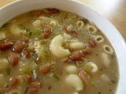

Pasta fagiole

This is a delicious bean based soup thats made using everyday ingredients!
I was first introduced to this soup by my grandmother, who is Italian. This has
become a family staple, with everyone in the family having their own version
In this recipe, I am going to introduce my version. I like to think of my version
as a bit more of a shortcut for time, without sacrificing any flavor! I hope that
you will feel confident enough to run with this and make your own version to pass on
to your loved ones
Ingredients list:
- Three cans of cannelini beans
- Three celery stalks
- A large sweet onion
- 4 to 6 slices of bacon
- 4 cups of chicken broth
- Enough garlic cloves for flavor (4)
- Two carrots
- Tomato paste for color
Directions:
-
Then first step would be to practice mis en plas
Dice up your onion, garlic, and bacon. Slice your carrots and celery
- In a large soup pan, heat up the bottom with olive oil and meadium high heat, add your carrots and celery. Let it sweat until a bit tender, add salt.
- Then add the onion, let it cook until onion starts to look a little translucent. Stir occasionally to prevent veggies from sticking
- By now the veggies should smell nice. Add the bacon, and cook with the veggies. Try not to let the veggies burn by this point
- Once the bacon is cooked, add the garlic and let simmer for about 1 minute, or until garlic is fragrant
- Once garlic is fragrant, add two of the three cans of cannelini beans. Mash up the third can into a paste before adding
- After the beans have heated and mixed, add four cups of chicken broth, and let simmer for about 20 minutes
- While simmering, boil a pot of water and cook your past of preference. I prefer shells
- You may optinally add a rind of paremsan cheese to give a bit more flavor to the broth
- For color, add 1 to 2 tbsps of tomato paste. Taste, season with salt, and fresh parsely to taste
- Add the pasta to the soup in your serving bowl (DO NOT MIX, OTHERWISE PASTA WILL GET MUSHY) and enjoy!